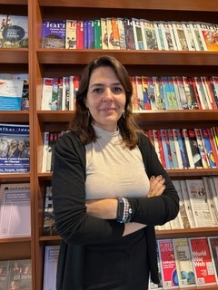

Inclusive planning tools
that actually get used.
I help organizations turn complex social and policy challenges into actionable outcomes — through research, advisory support, training, and learning simulations built on 20+ years of academic and field experience.

Researcher, educator, and policy practitioner — across cities, climate, and social change.
I'm Dr. Eda Acara — a Turkish-Canadian geographer, policy researcher, and educator with a PhD in Geography and Planning from Queen's University, a Master's in Gender and Women's Studies from Saint Mary's University, and a Bachelor's in Sociology from Middle East Technical University.
My work sits at the intersection of urban studies, environmental policy, gender, migration, and climate change. Over two decades I've taught university courses, led funded research projects, and worked as a policy and development consultant for the World Bank, EBRD, and UNDP — on everything from Green City Action Plans for Istanbul and Ankara, to Turkey's Irrigation Modernization Project, to a UNDP climate and biodiversity program. I'm a Coordinating Lead Author for MedECC's Special Report on Environmental Change, Conflict, and Human Migration, and a former Research Fellow at Istanbul Policy Center, Sabancı University / Tufts Climate Policy Lab.
Future Craft Studio is how I bring that depth directly to the organizations that need it — as advisory support, training workshops, learning simulations, and practical diagnostic tools.
Research, training, tools, and advisory — built around your context
Whether you need a rapid diagnostic, a deep policy engagement, a custom training workshop, or a learning simulation — I work with you to figure out what will actually make a difference.
Gender & Social Screening
Social screening assessments and gender analysis for infrastructure, energy, and investment projects — including solar power, irrigation, and urban green infrastructure. Delivered to World Bank and EBRD standards.
Green City & Climate Policy Advisory
Gender mainstreaming and social inclusion support for Green City Action Plans, climate policy tools, and just transition frameworks. Grounded in field experience across Istanbul, Ankara, and national-level climate programs.
Training, Workshops & Learning Simulations
Custom training modules, interactive workshops, and teaching and learning simulations on gender and social inclusion, climate justice, urban resilience, and policy analysis. Grounded in 20+ years of university teaching and field-based learning design. Delivered in English and Turkish.
EquiCity Quickscan & Diagnostics
A rapid 10-question inclusion diagnostic for any project or plan — identifying equity gaps in procurement, participation, reporting, and investment in under 30 minutes. Includes scored report and recommended next steps.
EquiCity Quickscan
Not sure where inclusion gaps exist in your project or plan? The EquiCity Quickscan is the fastest way to find out — and to communicate that assessment to your team and stakeholders.
Research-backed. Field-tested.
Academic foundation
PhD in Geography and Planning, Queen's University (2015). MA in Gender and Women's Studies, St. Mary's University. BA in Sociology, METU. Published in the Annals of the Association of American Geographers, Urban Geography, and Fe Journal. Co-edited book: Unfinished Revolution: Urban Politics and Practices in Turkey (Bilgi University Press, 2022).
International project experience
Gender & Economic Inclusion Expert, EBRD Green City Action Plans — Istanbul & Ankara (Arup, 2021–2024). Social Expert, World Bank Turkey Organized Industry Zones (2023–2024). Gender & Irrigation Specialist, World Bank Irrigation Modernization Project (2019–2023). Gender Mainstreaming Consultant, UNDP Türkiye (2025). Local Gender Expert, UNDP GEF SWAP Initiative (2024).
Awards & recognition
Şirin Tekeli Research Award, Sabancı University (2021). Emerging Scholar Award, Gender, Place & Culture Journal (2019). SSHRC Doctoral Award, Canada (2012–2014). AAG Thesis Dissertation Award (2013). R.S. McLaughlin Fellowship, Queen's University. Best Short Film Script, 3rd Nisi Masa European Contest, France (2004).
Policy & research leadership
Contributing Lead Author, MedECC Special Report: Environmental Change, Conflict and Human Migration (2021–present). IPC Research Fellow & Coordinator, Raising Ambition Project — Sabancı University & Tufts Climate Policy Lab (2023–2025). Sessional Lecturer, University of Calgary, Dept. of Sociology (2026).
Let's talk for 15 minutes.
No pitch, no pressure. We'll figure out together whether Future Craft Studio is the right fit for what you're working on.
- Your current project or challenge
- Whether a scan, advisory, or workshop fits best
- A clear next step, whatever you decide
Book your 15-min call
Free · Typically confirmed within 24 hours
Request received!
I'll be in touch within 24 hours to confirm a time. Check your inbox (and spam, just in case).